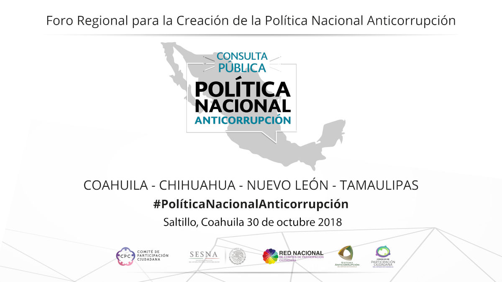
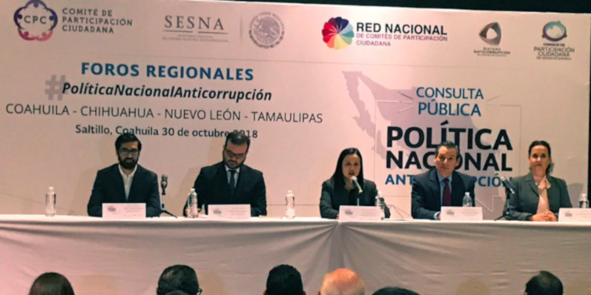
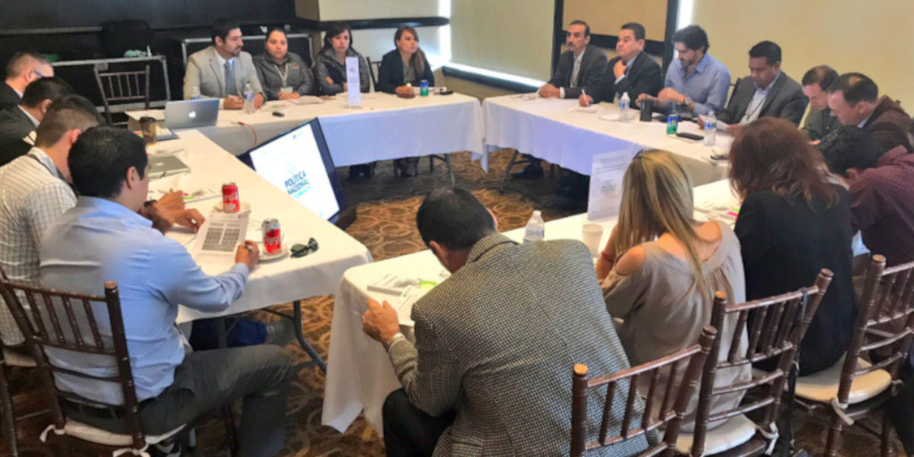
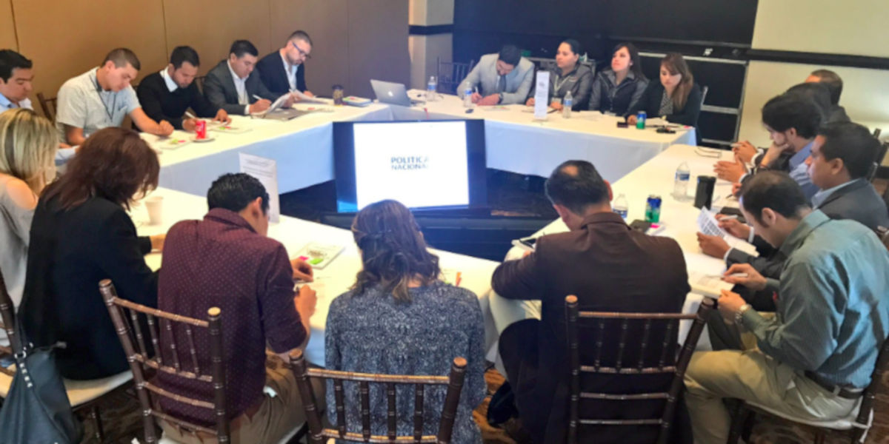
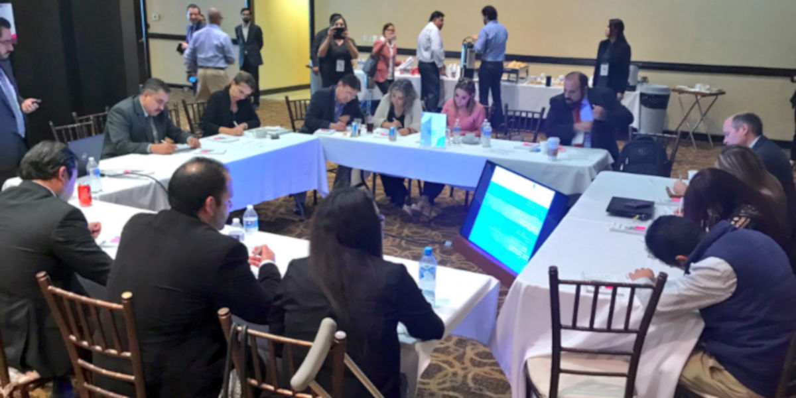
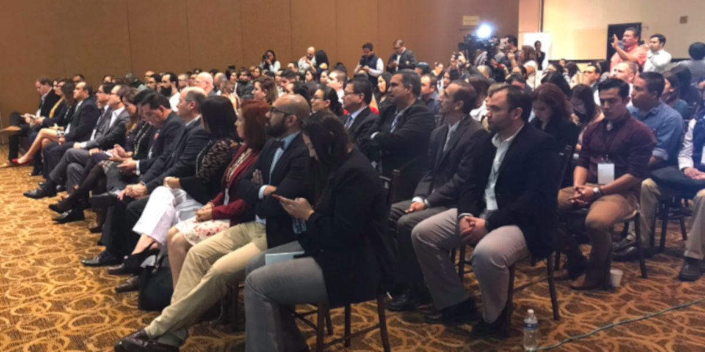
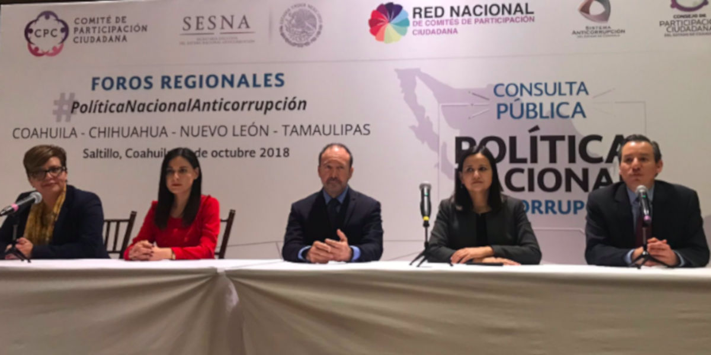

El pasado 30 de octubre, Coahuila, fue sede del Foro Regional para la Consulta de la Política Nacional Anticorrupción, cuyo objetivo fue crear un espacio para el diálogo e intercambio de ideas, en un nuevo marco de relación entre sociedad civil y gobierno, con el propósito de formular las acciones que guíen el control de la corrupción en México y transformar la calidad de vida de las personas.
El Sistema Anticorrupción del Estado de Coahuila de Zaragoza convocó al Foro, a organismos de la sociedad civil, grupos empresariales y gremiales, profesionistas, académicos, funcionarios públicos, e integrantes de los Comités de Participación Ciudadana de los Estados de Coahuila, Chihuahua, Nuevo León y Tamaulipas.
A dicho encuentro participaron 112 personas, quienes aportaron propuestas concretas que pudieron plasmarse en las siguientes mesas de trabajo:
- Ciclo de denuncia, investigación y sanción de actos de corrupción
- Acciones de combate a la corrupción en el ámbito municipal
- Fortalecimiento del servicio público
- Redes de corrupción
- Participación ciudadana y derechos humanos
Algunas de las organizaciones civiles que estuvieron presentes en el evento el Consejo Cívico de Instituciones de la Región Sureste, Consejo Cívico de Instituciones de la Región Laguna, Participación Ciudadana 29, Caballeros de Colón y Casa de los Niños, además, activistas involucrados en los temas de transparencia, rendición de cuentas y combate a la corrupción.
Asistieron representantes de cámaras empresariales como la Cámara Nacional de la Industria de Transformación (CANACINTRA) Región Coahuila Sureste, Cámara Nacional de la Industria de Restaurantes y Alimentos Condimentados (CANIRAC) Delegación Coahuila, Confederación Patronal de la República Mexicana (COPARMEX) Coahuila Sureste, Cámara Nacional de Autotransporte de Carga (CANACAR) Delegación Coahuila.
Del sector educativo se dieron cita, el Rector de la Universidad Carolina, maestros investigadores de la Universidad Autónoma de Coahuila, Universidad Autónoma Agraria Antonio Narro, Centro de Investigaciones Socio Económicas, Academia Interamericana de Derechos Humanos y la Universidad Autónoma del Noreste.
También acudieron personas de gremios sindicales, Colegio de Contadores, consultorías privadas, periodistas especializadas en materia anticorrupción, el Instituto Nacional de Estadística y Geografía (INEGI) y de la Agencia de los Estados Unidos para Desarrollo Internacional (USAID).
Del ámbito público, asistieron los magistrados presidentes del Tribunal de Justicia Administrativa de Coahuila y Nuevo León; la Secretaria de Fiscalización y Rendición de Cuentas del Gobierno del Estado de Coahuila y el Encargado del Despacho de la Contraloría y Transparencia Gubernamental del Gobierno de Nuevo León; el Comisionado Presidente y Comisionada del Instituto Coahuilense de Acceso a la Información Pública; representantes de las Fiscalías Especializadas por Hechos de Corrupción de los Estados de Coahuila, Chihuahua y Tamaulipas; funcionarios públicos de la Auditoría Superior del Estado de Coahuila y del resto de las instituciones que forman parte del Comité Coordinador del Sistema Anticorrupción del Estado de Coahuila.
El Sistema Nacional Anticorrupción estuvo representado por un integrante del Comité de Participación Ciudadana, y por funcionarios de la Secretaría Ejecutiva del SNA; así como por los comisionados y consejeros de los Estados de Coahuila, Chihuahua, Nuevo León y Tamaulipas y servidores públicos de la Secretaría Ejecutiva de Coahuila del Sistema Anticorrupción del Estado de Coahuila.
Cabe destacar, que este y otros siete foros, forman parte de tres pilares de la consulta para la Política Nacional, el primero, es la creación de un Consejo Consultivo en el que participan especialistas en la materia, segundo, la consulta en línea, y tercero los foros regionales.
El Comité Nacional de Participación Ciudadana y la Secretaría Ejecutiva del Sistema Nacional Anticorrupción, instancias encargadas de integrar la Política Anticorrupción, darán a conocer los resultados de los tres pilares de la consulta en el próximo mes de diciembre.






